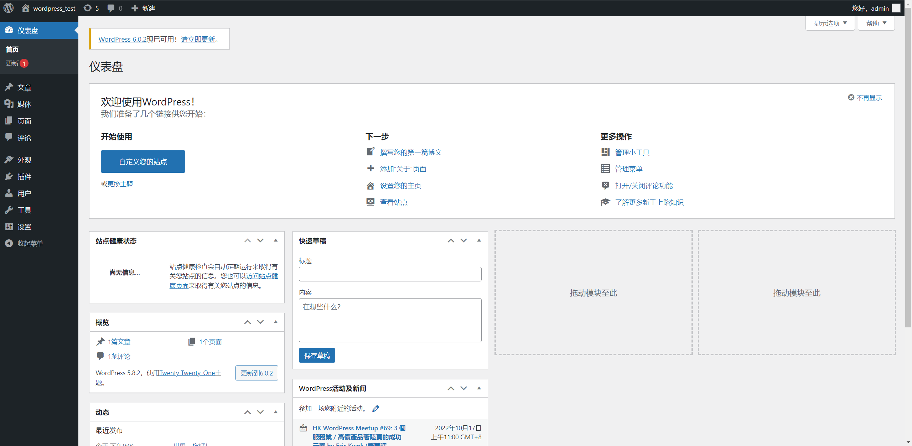
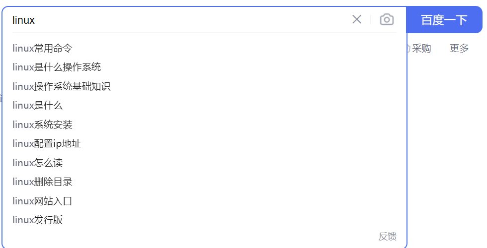

1、postgresql架构与原理
PostgreSQL 是当前功能最强大的开源的关系型数据库系统，支持跨平台的多种操作系统，基于C语言开发。通常简称为PG 或PGSQL 。
PostgreSQL 宣称是世界上最先进的开源数据库。PostgreSQL的狂热者认为它的性能和Oracle不分上下 ，而且没有高成本的负担 。
官网
中文社区
中文手册
基本要素：
存储引擎：这是PostgreSQL用来存储数据的核心组件。它负责将数据存储在磁盘上，并支持查询和事务处理。PostgreSQL有多种不同的存储引擎可供选择，包括B-树存储引擎（默认存储引擎）和哈希存储引擎。
缓冲池：这是一个用于缓存数据和索引的内存区域。当数据或索引需要被访问时，它们会被加载到缓冲池中。这样，在之后的访问中就可以快速访问数据，而不必再次从磁盘中加载。
事务日志：PostgreSQL使用事务日志来记录所有的修改操作，以便在发生故障时恢复数据。事务日志还被用于支持复制和恢复数据库。
SQL解释器：这是PostgreSQL用来解析和执行SQL语句的组件。它根据SQL语句的内容生成执行计划，并将其传递给存储引擎来执行。
2、基于流复制完成postgresql的高可用 1 2 3 4 5 6 7 8 9 10 11 12 13 14 15 16 17 18 19 20 21 22 23 24 25 26 27 28 29 30 31 32 33 34 35 36 37 38 39 40 41 42 43 44 45 46 47 48 49 50 主库：10.0.0.136 从库：10.0.0.138'123456' ;rm -rf /pgsql/data/* rm -rf /archive/* 'host=10.0.0.136 port=5432 user=repluser password=123456' 'cp /archive/%f %p' in production's REDO location: 0/2D0001F0 Latest checkpoint' s REDO WAL file: 00000002000000000000002Din archive recovery's REDO location: 0/2D0001F0 Latest checkpoint' s REDO WAL file: 00000002000000000000002D
3、实现postgresql的时间点还原 1 2 3 4 5 6 7 8 9 10 11 12 13 14 15 16 17 18 19 20 21 22 23 24 25 26 27 28 29 30 31 32 33 34 35 36 37 38 39 40 41 42 43 44 45 46 47 48 49 50 51 52 53 54 55 56 57 58 59 60 61 62 63 64 65 66 67 68 69 70 71 72 73 74 75 76 77 78 79 80 81 82 83 84 85 86 87 88 89 90 91 '[ ! -f /archive/%f ] &&cp %p /archive/%f' $PGDATA id int);$PGDATA rm -rf /pgsql/data/* rm -rf /archive/* "DROP dir" true ; xid 0:785; oid 32848; multi 1; offset 0; oldest xid 726 in DB 1; oldest multi 1 in DB 1; oldest/newest commit timestamp xid: 0/0; oldest running xid 784; onlinedir 1663/24656'restore_point' '2022-10-18 21:31:51' '0/250000F8' $PGDATA in a read-only transactionin archive recoveryin production
4.wordpress+nfs架构 1 2 3 4 环境：
1.docker搭建wordpress+MySQL docker run的时候，需要-v映射到nfs的共享目录，单个docker的映射目录()
1 2 3 4 5 6 7 8 9 10 11 12 13 14 15 16 17 18 19 20 21 22 23 24 25 26 27 28 29 30 31 32 33 34 docker pull wordpress'{print $1}' `rm -f `docker ps -a | grep wordpress | awk '{print $1}' `"WorkingDir" : "/var/www/html" ,"docker-entrypoint.s…" 4 seconds ago Up 3 seconds 0.0.0.0:8002->80/tcp, :::8002->80/tcp wordpress'%' ;

新建一篇文章发布
2.rsync直接同步uploads目录到备份机[wp] docker搭建映射出来的路径，不能再进行一次挂载，所以说API服务器有两个，IP+相同的端口号，uploads的rsync直接指向到10.0.0.132的复制目录，/data/bak
[root@master uploads]#exportfs -r
如果是多个web前端的话，程序可以控制写到LB的IP，负载均衡两个WEB，两个WEB的图片备份都指向备份机器，且两台WEB之间同步图片
1 2 3 4 5 6 7 8 9 10 11 12 13 14 15 16 17 18 19 20 21 22 23 24 25 26 27 28 29 30 31 32 33 34 35 36 37 38 39 40 41 42 43 44 45 46 47 48 49 50 51 52 53 54 55 56 57 "/apps/wordpress/wp-content/uploads" > <!--/apps/wordpress/wp-content/uploads -->"10.0.0.132" name="wp" /> <!--修改远端rsync备份服务器和备份目录 -->"-artuz" />"true" users ="rsyncuser" passwordfile="/etc/rsync.pas" /> <!--鉴权用户名，调用本地的password文件 -->read only = nousers = rsyncusernohup ./sersync2 -dro confxml.xml
3.rsync使用脚本(在没有包的情况下，常用) 顺便安装了rsync和inotify，可以作为定时任务，或者nohup也行
缺点：调用多次rsync，有点小毛病，调用多次create，attribu等指令
1 2 3 4 5 6 7 8 9 10 11 12 13 14 15 16 17 18 19 20 21 22 23 24 25 26 27 28 29 30 31 vim inotify_rsync.shnohup ./inotify_rsync.sh'/apps/wordpress/wp-content/uploads/' 'rsyncuser@10.0.0.132::wp' echo 50000000 > /proc/sys/fs/inotify/max_user_watchesecho 327679 > /proc/sys/fs/inotify/max_queued_eventsecho "starting monitor file change..." sleep 2".*\.swp" --timefmt '%Y-%m-%d %H:%M:%S' --format '%T %w %f' -e create,delete,moved_to,close_write,attrib ${SRC} |while read DATE TIME DIR FILE;do ${DIR} ${FILE} $SRC $DEST echo "At ${TIME} on ${DATE} , file $FILEPATH was backuped up via rsync" >> /var/log/changelist.logdone
nohup 英文全称 no hang up（不挂起），用于在系统后台不挂断地运行命令，退出终端不会影响程序的运行。如果不执行nohup则是前台执行
4.负载均衡架构 nginx：前端负载均衡
web01，web02：docker部署
备份服务器：web01和web02互相使用rsync脚本同步，同步前先完成一遍复制确保一致
web01和web02再备份一次到备份服务器
3方—4方—多方同步解决
目前只能实现docker单节点部署wordpress，通过脚本自动备份到远端132的机器
1.环境：可以在slave1上面搭建web02站点
1 2 3 4 5 6 7 8 9 10 11 12 13 14 15 16 17 18 19 20 21 22 23 24 25 26 27 28 29 30 31 32 33 34 搭建docker环境，搭建私有仓库's/enable/disabled/g' /etc/config/selinux's/gpgcheck=1/gpgcheck=0/g' /etc/yum.repos.d/docker-ce.repochown apache.apache /var/www/html/*
2.拷贝所有web01站点的信息过去，docker需要映射出来
1 2 3 4 5 6 7 8 9 10 11 12 13 14 15 16 17 18 19 20 21 22 23 24 25 26 27 28 29 30 31 32 33 34 35 36 37 38 39 40 41 42 43 44 45 46 47 48 49 50 51 52 53 54 55 56 57 58 59 60 61 62 63 64 1.配置docker基础环境"registry-mirrors" : ["https://plqjafsr.mirror.aliyuncs.com" "exec-opts" : ["native.cgroupdriver=systemd" "log-driver" : "json-file" ,"log-opts" : {"max-size" : "100m" "storage-driver" : "overlay2" ,"insecure-registries" : ["10.0.0.128:5000" ] ---配置本地仓库"repositories" :["wordpress" ]}"repositories" :["wordpress" ]}'{print $1}' `'{print $1}' `'{print $1}' `rm -f `docker ps -a | grep wordpress | awk '{print $1}' `
3.配置WEB01的DNS解析，添加A记录
4.前端添加一个nginx，实现前端负载均衡
1 2 3 4 5 6 7 8 9 10 11 12 13 14 15 16 17 18 19 20 21 22 23 24 25 26 27 28 29 30 31 32 33 34 35 36 37 38 39 40 41 42 43 44 45 46 47 48 49 50 51 52 53 54 55 56 57 58 59 60 61 62 63 64 65 66 67 68 69 70 71 72 73 74 75 76 77 78 79 80 81 82 83 84 85 86 87 88 89 90 91 92 93 94 95 96 97 98 99 '%' ;'%' identified by 'wordpress' ;'%' ;cp : overwrite ‘/apps/nginx/html/php/index.php’? ychown -R nginx.nginx php/$fastcgi_script_name ;$fastcgi_script_name ;sync ,wdelay,hide,no_subtree_check,sec=sys,rw,secure,no_root_squash,no_all_squash)echo "10.0.0.128:/apps/nginx/html/php /apps/nginx/html/mobile/php nfs defaults,_netdev 0 0" >> /etc/fstab
5. redis数据类型有哪些？ key：string类型，指定键值对 字符串类型
1 2 3 4 5 6 7 8 9 10 11 12 13 14 15 16 17 18 19 20 21 22 23 24 25 26 27 28 29 30 31 32 33 34 35 36 37 set key valueset key value [EX seconds|PX milliseconds|EXAT timestamp|PXAT milliseconds-timestamp|KEEPTTL] [NX|XX] [GET]set hongbao 100 EX 10set c1 1set c2 2type c1set hongbao 100 ex 100integer ) 97set num 10integer ) 11integer ) 12
list：类似数组，称为列表 类似数组
定义一个数组
array=(0,1,2,3)
下标：array[0]，[1]以此类推
1 2 3 4 5 6 7 8 9 10 11 12 13 14 15 16 17 LPUSH：从左边开始编号，索引为0,1,2,3...integer ) 3"a" "c" type list1type list1
sets：集合，取交集/并集/差集，共同认识的好友 集合：无序的字符串放在里面，同一个集合内的元素不能重复，唯一的；不同的集合之间可以取并集，实现统计，例如共同好友等
里面可以是各种字符串
集合之间的操作
1 2 3 4 5 6 7 8 9 10 11 12 13 14 15 16 17 18 19 20 21 22 23 24 25 26 27 28 29 30 31 32 33 34 35 36 integer ) 3integer ) 3"tom" "bob" "mary" "tony" "jerry" "mary" "mary" "mary" "bob" "tom" "tony" "jerry" "tom" "bob"
sorted sets：有序集合，常用于排行榜(名字-分数对) 按照一定的次序进行集合内的排序，比如排行榜，百度搜索的集合；或者是基于ES推荐的
ES内存储的就是无序集合

每个元素都是由score和value组成的，可以根据分数来对人(value)进行排名，或者是别的值，比如说商品根据购买量、好评数等参数来进行排序，就可以使用有序集合sorted
1 2 3 4 5 6 7 8 9 10 11 12 13 14 15 16 17 18 integer ) 4"jay" "eason" "feiniao" "joey" "joey" "feiniao" "eason" "jay"
hash：哈希值 hash map操作
6. redis RDB和AOF比较？ redis RDB：实现redis的持久化存储，重启redis服务会重新加载rdb存储，存储路径可以在redis内自定义，RDB类似MySQL的mysqldump，全量复制
可以基于.RDB文件进行定时的备份，
AOF：实时的数据更新，只要有redis库的数据更新，则更新一份.aof文件，包括增删改等操作；
采用COW机制：copy on write，只要有数据更新，就会实时写入到.aof文件，无论是增加（set value）、删除（del value）、修改（set value）都一样
AOF的优先级高于RDB，如果两项都开启的话，默认redis读.aof
1 2 3 4 5 6 7 8 9 10 11 12 13 14 15 16 17 18 19 20 .aof的数据写入磁盘规则，每秒钟写一次磁盘，无论在1s(everysec)内有多少数据更新都是整合成一次IO进行写入
7. redis配置文件详解。 1 2 3 4 5 6 7 8 9 10 11 12 13 14 15 16 17 18 19 20 21 22 23 24 25 26 27 28 29 30 31 32 sed -i -e 's/bind 127.0.0.1/bind 0.0.0.0/' -e "/# requirepass/a requirepass $PASSWORD " -e "/^dir .*/c dir ${INSTALL_DIR} /data/" -e "/logfile .*/c logfile ${INSTALL_DIR} /log/redis-6379.log" -e "/^pidfile .*/c pidfile ${INSTALL_DIR} /run/redis_6379.pid" ${INSTALL_DIR} /etc/redis.confbind 0.0.0.0 dir /apps/redis/data/ log yes "appendonly.aof"